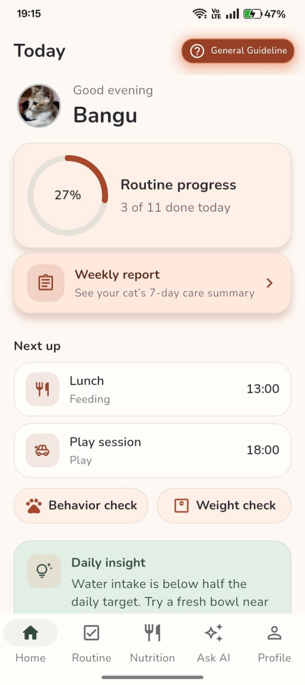
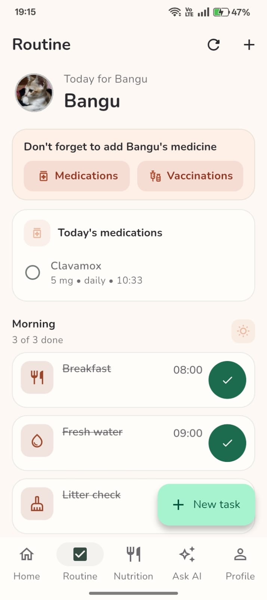
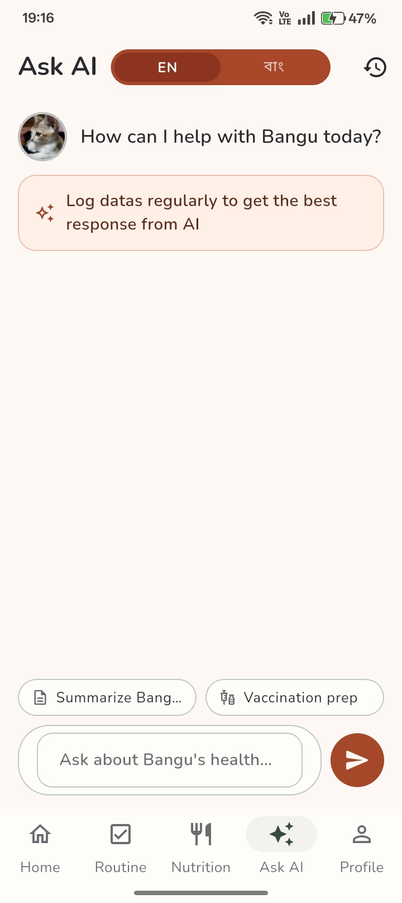
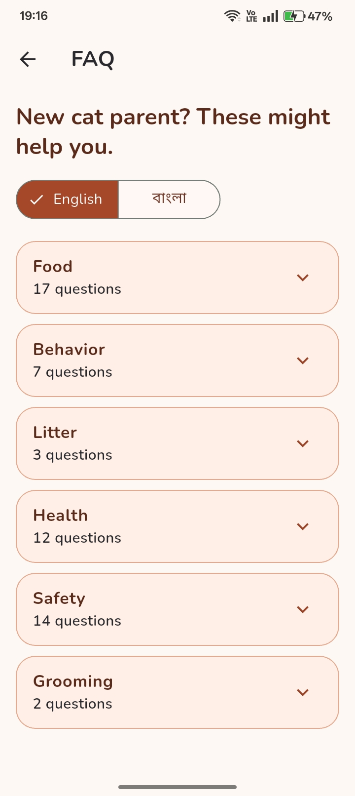
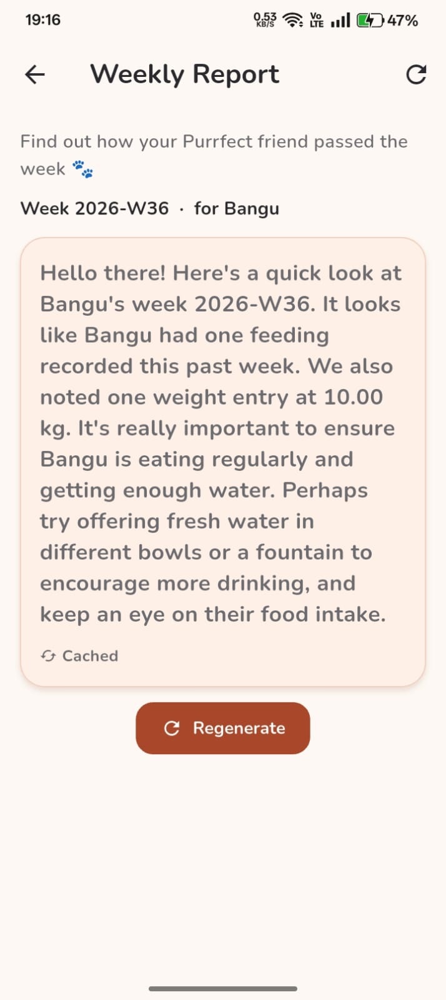

- Daily routines and remindersPlan feeding, fresh water, play, grooming, litter, medicine, and other care tasks.
- Nutrition trackingLog meals and water while following targets personalized to your cat.
- Health recordsKeep medications, vaccinations, reports, notes, and important care history together.
- Weight and behaviorFollow weight changes and record appetite, activity, mood, and unusual signs.
- Ask AI and weekly reportsReceive personalized responses and summaries based on the care data you record.
- New cat parent guidanceBrowse practical FAQs in English and Bangla.
- Multiple cat profilesGive every cat a separate profile, photo, records, routines, and care history.
A calmer way to care
Everything your cat needs, in one warm little place.
Track routines, meals, water, health records, medicines, vaccinations, weight, and more — all focused on the cat you love.
● Available for Android now
Made for everyday care
Features
See CatCare BD
A peek inside the app

Home screenshot
Routine screenshot
Ask AI screenshot
FAQ screenshot
Weekly Report screenshotKeep your cat's care close
Subscribe to CatCare BD
2.78 Tk/day · auto-renew
Enter your Bangladesh mobile number. An OTP will be sent to confirm and activate your subscription.